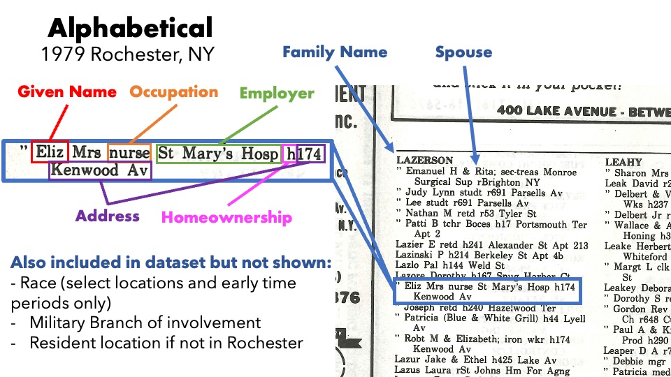
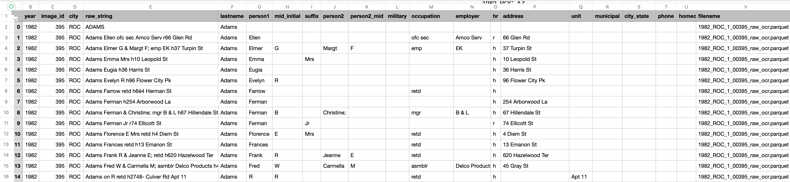

Research
City Directories and Brain Drain in Rochester, NY
This project uses a custom-tailored OCR pipeline for the image processing
and text extraction of digitized city directories published by R.L. Polk & Co. from 1879 to 2010.
My Role
I built the OCR pipeline, performed the text extraction, geocoding, and data analysis. I am a coauthor on a paper currently seeking to answer two questions:
- What is the effect of social proximity on entrepreneurship?
- How do innovators respond to the threat of losing their jobs?
The latter asks how the expectation of being laid off influences some inventors' (patent holders)
decision to start their own business, retire, substitute employment for a similar tech job,
or move completely from the area, which then measures a level of brain drain resulting from the crash of
Eastman Kodak in the 1990s.
Below describes the data and OCR pipeline I built for this project.
Data
We have a collection of scanned city directories published by R.L. Polk from the late 1800s to the first decade of the 2000s. These records are important because they have individual-level occupation/position and employer data in addition to the home address. Below shows the sort of data one would find on these pages:

The current study divides the data into two categories: Business and Alphabetical directories.
Alphabetical directories are organized by last name and are not exclusively residential listings.
Zinco has been tested and validated on the R.L. Polk & Co. directories from 1879 to 2010 in the Rochester,
NY area, with
some testing on Greensborough NC. These directories are normally found in public libraries and are still
being published.
My program, Zinco, is built to read and compile information contained in these images
and save them to a centralized, queryable database. To date, I have compiled over 2 million records from
the Rochester, NY area for just the 1990s and am currently compiling more from outside that window.
While OCR'd city directories are not new, most are products of outdated OCR technology and
are of questionable accuracy or formatting (usually a plain text file of sparse text and no delineation of
field or order). We are unaware of any other database in the academic or genealogical communities that contains the
precision and breadth of this database.
Pipeline
With the help of historians and FamilySearch volunteers, these records are scanned and saved into digital directories. This is an example of page from the 1990 Rochester, NY suburban directory:

Zinco works in three ways: preprocessing, OCR, and postprocessing, which I otherwise call parsing. The preprocessing step uses computer vision to make the image and readable as possible for the OCR, which reads and saves the text in a tabular form (rather than plain text). The postprocessing step then applies Natural Language Processing (NLP) to parse the data from the directory into its respective fields, as shown below.
Pretty neat, huh?
Now that we have a cross-section of people with addresses extracted from their directory entry,
we can take this process a step further and think about plotting the addresses of specific Kodak executives
or employees, and boom! We have a map of the social and professional networks of Kodak employees in Rochester, NY.
Of course, this is an extremely simplified way to explain a rather complicated process. Below is a
a more detailed workflow diagram of this part of the pipeline.